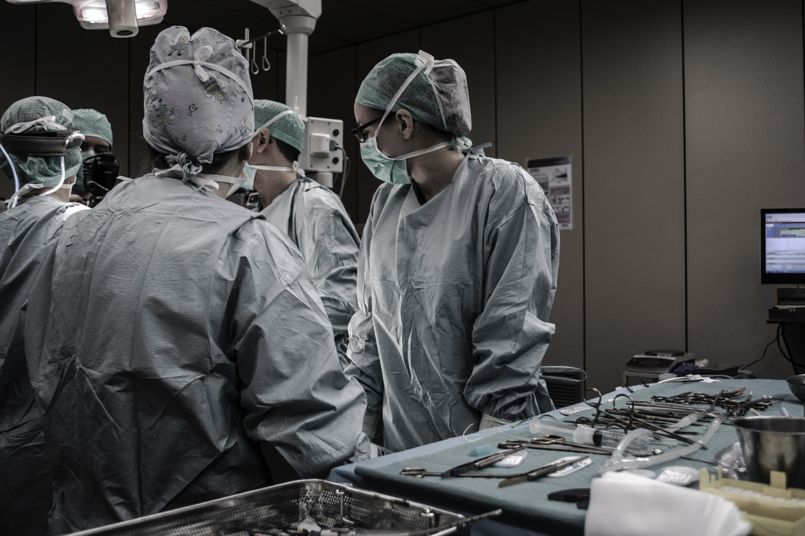

-

The Clinical Medical Staffing
We are a team of profesionals.
-

Proper Clinical Trainings
-

Get Introduced to opportunities in the Clinical Industry.
Here at The Clinical Medical Staffing, we focus on developing collaborative relationships with both our clients who we introduce to job opportunities and candidates who we train. Our team has over 20 years experience in building and maintaining wonderful relationships with life sciences professionals and a portfolio of global brands. We differentiate ourselves from traditional staffing agencies by our combined resourcing and clinical trial expertise and strong network. Empowering Healthcare and Life Sciences ClinMed has extensive experience in the drug development process. Our services have helped accelerate the timeline, drive down cost and ensured quality of drug development in many areas like: Clinical Project Management, SAS Statistical Programming, Clinical Data Management, EDC Developers, Biostatistics, Quality Assurance, Clinical Scientist, Medical Writer, Drug Safety, Clinical Trial Managers, Clinical Research Associates
The ClinMed team specializes in recruiting high quality candidates that possess the necessary skillsets to fulfill clients need within clinical trials and biomedical industry. ClinMed has the required infrastructure and capability to provide support at client’s location, as well as our off-site location.
ClinMed’s FSP model offers resourcing solutions that provides a specific functional service to clinical trial projects. Let us help scope the project with you and build the team to deliver on-time and on-budget. Rather than the individual contributor approach, the FSP model converts complex business processes into simpler activities with defined quality measurements. We work with you to build a functional team, with SOPs that fit within your environment (people, processes and systems) in order to drive effective and efficient outcomes
ClinMed identifies, qualifies, and places employees to meet their client’s full time hiring needs. Clients are assured that the candidates have the necessary background and expertise to immediately handle assignments and projects.
Here at The Clinical Medical Staffing, we focus on developing collaborative relationships with both our clients who we introduce to job opportunities and candidates who we train. Our team has over 20 years experience in building and maintaining wonderful relationships with life sciences professionals and a portfolio of global brands. We differentiate ourselves from traditional staffing agencies by our combined resourcing and clinical trial expertise and strong network.